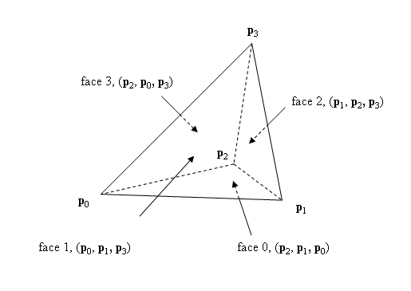

tetrahedral volume element
The SDK expects the 4 vertices to be given in the sequence illustrated in the figure above, i.e., the 4 vertices should be given such that the four vertex triples defining the tetrahedron faces in the drawing appear in counter-clockwise order when being viewed at from the outside. (Our tetra-mesh generation tools take care of this automatically).
MemoryWriteBuffer wb;
if (!NxCookSoftBodyMesh(desc, wb)) return
false;
The NxSoftBodyMeshDesc references a set of vertex positions and a list of indices. Groups of four indices are interpreted as tetrahedra. If soft body tearing is to be used, the user must raise the NxSoftBodyMeshFlags::NX_SOFTBODY_MESH_TEARABLE flag.
In a second step an NxSoftBodyMesh is instantiated using the stream
MemoryReadBuffer rb(wb.data);
softBodyMesh =
scene->getPhysicsSDK().createSoftBodyMesh(rb);
Once the NxSoftBodyMesh has been created, it can be instanced in the form of NxSoftBody objects to go with the mesh. One soft body mesh may have many instances, for things like differentiating characters, or to illustrate certain conditions such as stiffness.
First, we need to fill in an NxSoftBodyDesc structure and call
NxScene::createSoftBody() to create a soft body. Parameters for the soft body
can be set either in the descriptor or later after the soft body has been
created. See Soft Body Parameters for
details.
NxSoftBodyDesc desc;
NxMeshData receiveBuffers;
//Fill in receive buffers...
desc.softBodyMesh = softBodyMesh;
desc.meshData = receiveBuffers;
mSoftBody = scene->createSoftBody(desc);
/*
** Generate a regular 3d grid of vertices and connect them through tetrahedral ** constraints to generate a solid soft body block. ** One cube element in the grid is filled out with 5 tetrahedral constraints. ** numX, numY, numZ specify the number of cube elements in each dimension, ** h is the grid size */ int numX = 3; int numY = 4; int numZ = 5; float h = 1.0f; NxSoftBodyMeshDesc desc; desc.numVertices= (numX+1) * (numY+1) * (numZ+1); desc.numTetrahedra= numX*numY*numZ*5; desc.vertexStrideBytes= sizeof(NxVec3); desc.tetrahedronStrideBytes= 4*sizeof(NxU32); desc.vertexMassStrideBytes= sizeof(NxReal); desc.vertexFlagStrideBytes= sizeof(NxU32); desc.vertices= (NxVec3*)malloc(sizeof(NxVec3)*desc.numVertices); desc.tetrahedra= (NxU32*)malloc(sizeof(NxU32)*desc.numTetrahedra * 4); desc.vertexMasses= 0; desc.vertexFlags= 0; desc.flags= 0; int i,j,k; NxVec3 offset(h * numX * 0.5f, h * numY * 0.5f, h * numZ * 0.5f); NxVec3 *p = (NxVec3*)desc.vertices; for (i = 0; i <= numX; i++) { for (j = 0; j <= numY; j++) { for (k = 0; k <= numZ; k++) { p->set(h*i, h*j, h*k); *p -=offset; p++; } } } int i1,i2,i3,i4,i5,i6,i7,i8; NxU32 *id = (NxU32*)desc.tetrahedra; for (i = 0; i < numX; i++) { for (j = 0; j < numY; j++) { for (k = 0; k < numZ; k++) { // compute the 8 corner vertices of the cube element i5 = (i*(numY+1) + j)*(numZ+1) + k; i1 = i5+1; i6 = ((i+1)*(numY+1) + j)*(numZ+1) + k; i2 = i6+1; i7 = ((i+1)*(numY+1) + (j+1))*(numZ+1) + k; i3 = i7+1; i8 = (i*(numY+1) + (j+1))*(numZ+1) + k; i4 = i8+1; // define 5 tetrahedral constraints per cube element, // by adding an index quadruple for each one if ((i + j + k) % 2 == 1) { *id++ = i1; *id++ = i2; *id++ = i6; *id++ = i3; *id++ = i6; *id++ = i3; *id++ = i7; *id++ = i8; *id++ = i1; *id++ = i8; *id++ = i4; *id++ = i3; *id++ = i1; *id++ = i6; *id++ = i5; *id++ = i8; *id++ = i1; *id++ = i3; *id++ = i6; *id++ = i8; } else { *id++ = i2; *id++ = i5; *id++ = i1; *id++ = i4; *id++ = i2; *id++ = i7; *id++ = i6; *id++ = i5; *id++ = i2; *id++ = i4; *id++ = i3; *id++ = i7; *id++ = i5; *id++ = i7; *id++ = i8; *id++ = i4; *id++ = i2; *id++ = i5; *id++ = i4; *id++ = i7; } } } }